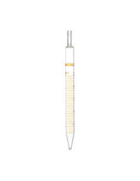
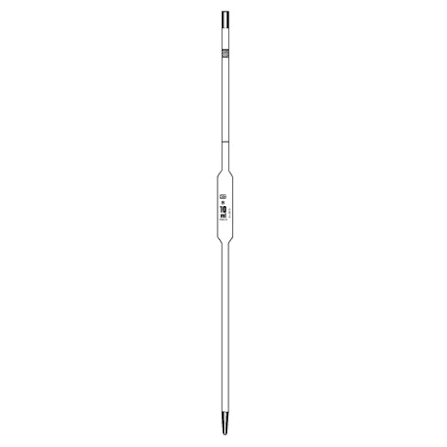
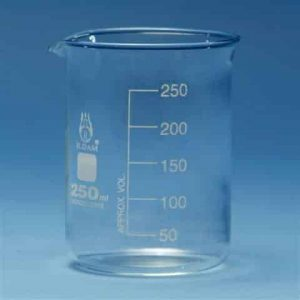
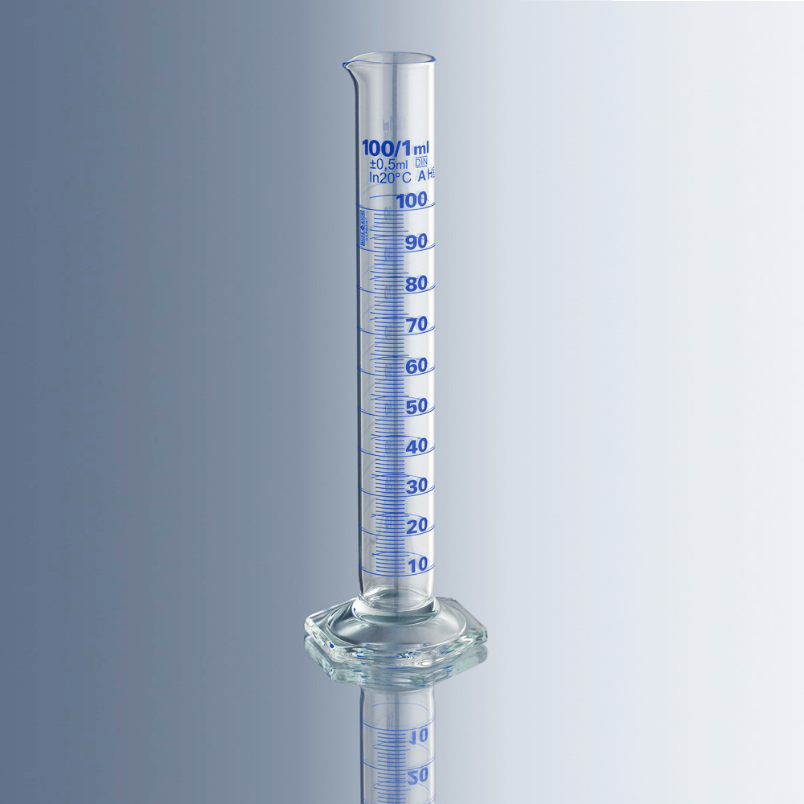
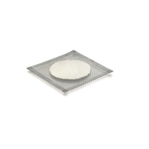

Evaluación de Laboratorio
Pregunta 1
Indique el nombre de cada uno de los siguientes instrumentos/materiales de laboratorio:





Pregunta 2
¿Cómo determina Ud. la densidad de una sustancia líquida y de un sólido irregular, como el de un cortauñas?
Pregunta 3
Describa el procedimiento para preparar 100 ml de solución de NaCl 0,5 M.
Pregunta 4
Tiene una solución de ácido acético de concentración desconocida... (Completo aquí según tu texto original).
a) Describa el procedimiento completo para la determinación de dicha acidez.
b) Si usa esa solución de NaOH y una muestra de 30 ml de vinagre, consumen 6,4 ml de esa solución. ¿Cuál es la concentración del ácido acético en la muestra?